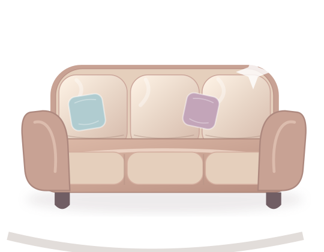
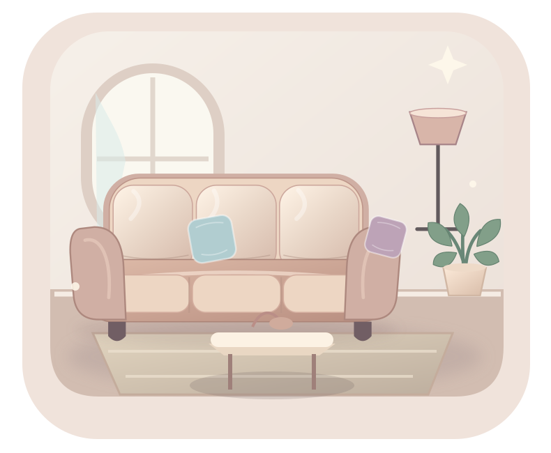
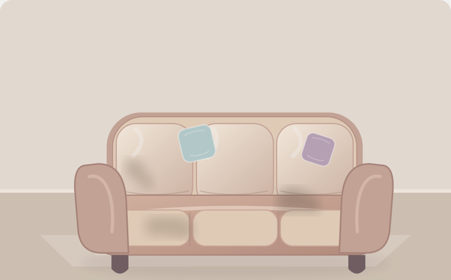
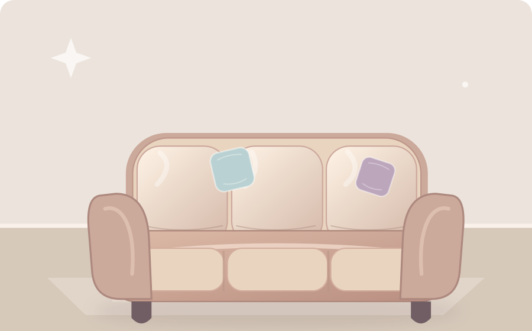
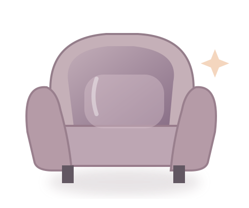
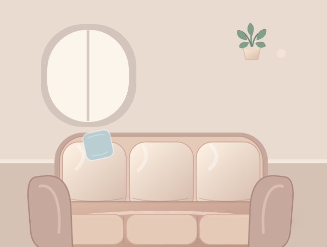
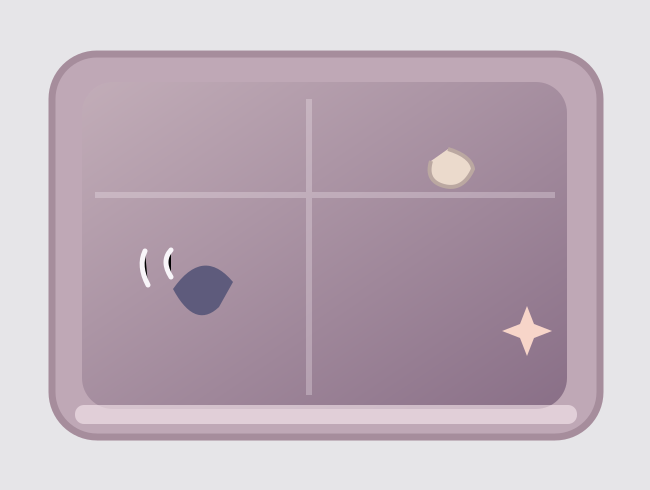
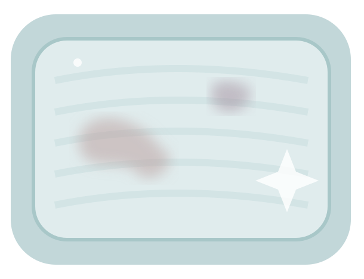
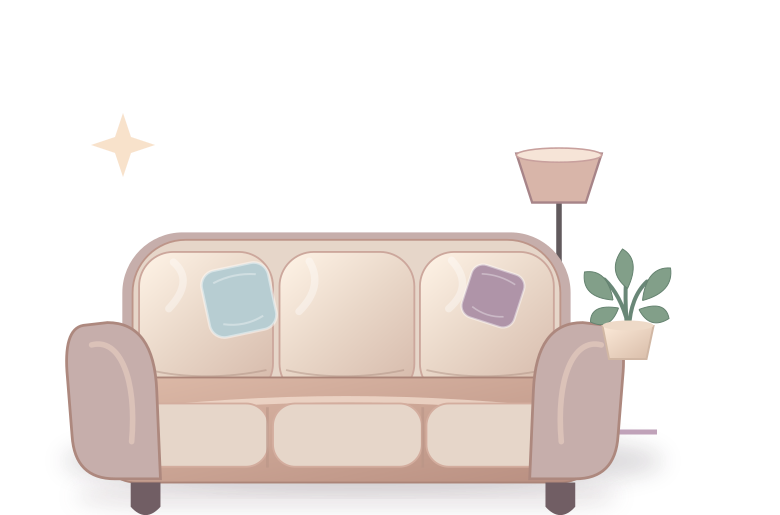

ОСНОВНОЕ НАПРАВЛЕНИЕ
Диваны
Прямые, угловые, компактные и большие — начнём с фотографии вашей мебели.

Дивану, креслу или любимому стулу можно подарить свежий вид. Расскажите, что нужно почистить, — подготовим обращение для предварительной оценки.

Передвиньте разделитель и сравните два состояния мебели. Это иллюстрация принципа химчистки, а настоящие работы компании можно посмотреть в её сообществе.

До
ПослеИллюстративное сравнение, не фотографии выполненного заказа.
Подберём подход к изделию и характеру загрязнений. Уточнить доступность отдельных услуг можно при обращении.
Прямые, угловые, компактные и большие — начнём с фотографии вашей мебели.

Обивка, которой хочется вернуть ухоженный вид.

Сиденья и тканевая обивка — особенности уточняются при оценке.
Вопрос о способе обработки и возможности выезда.
Коляски и автокресла — по описанию услуг компании.
Направления, кроме диванов, указаны в открытом описании компании. Возможность чистки конкретного изделия уточняйте заранее.
Два конкретных примера из ноябрьских публикаций VK. Мы сохраняем факты из описаний, но не приписываем компании изображения, которых она не предоставляла.

ИллюстрацияКомпания рассказала об обработке жёлтых пятен и налёта на кухонном диване.
Посмотреть публикации
ИллюстрацияПример работы со сложными пятнами, описанный в сообществе. Результат зависит от типа ткани и происхождения пятна.
Перейти к работамВид загрязнения помогает оценить сложность работы. Перед чисткой важно учитывать материал обивки и предыдущие попытки удаления пятен.
Уточнить возможность чистки
Выберите изделие, укажите загрязнения и, при желании, добавьте фотографии. Сайт подготовит аккуратный текст для обращения в «Кози».
Диван · 1 шт. · Самара
Сайт не отправляет заявки. После копирования вставьте текст в переписку и прикрепите фото самостоятельно.
Сначала расскажите о мебели. Затем согласуйте с мастером цену, выезд и способ обработки.
Фото, тип изделия и описание загрязнений помогут в предварительной оценке.
Стоимость и время выезда мастер согласует напрямую с вами.
Способ работы зависит от ткани, пятен и особенностей изделия.
Продолжайте пользоваться любимой мебелью с удовольствием.
Стоимость зависит от размера мебели, материала, количества изделий и загрязнений. Поэтому правильнее сначала показать фото, а потом согласовать цену.
Подготовить запросВыберите мебель, опишите загрязнения и отправьте мастеру фотографии. Ориентировочную стоимость можно уточнить напрямую в компании. Демоверсия не рассчитывает цену без действующего прайса.
Компания заявляет выездное обслуживание в Самаре, а условия поездки по области нужно уточнять индивидуально. Стоимость, минимальная сумма заказа и доступные адреса не подтверждены.
Компания описывает работу со сложными загрязнениями, но результат зависит от типа обивки, происхождения пятна и прошлых попыток чистки. Полное удаление любых загрязнений заранее не гарантируется.
Время высыхания зависит от материала, способа чистки, температуры и вентиляции. Точный ориентир лучше уточнить у мастера для конкретного изделия.
В этой независимой демонстрации можно выбрать до трёх изображений и посмотреть миниатюры. Фотографии никуда не отправляются: чтобы получить оценку, прикрепите их самостоятельно в чате VK.
Основное направление — диваны и мягкая мебель. В описании сообщества также перечислены кресла, стулья, ковровые покрытия и детские изделия. Уточните возможность работы с конкретным материалом перед заказом.
Напишите «Кози», расскажите о мебели и приложите фотографии для оценки. Договориться об условиях можно напрямую с исполнителем.
+7 (927) 700-21-23 Самара · Выезд по предварительному согласованию. Другие мессенджеры и адрес не подтверждены.